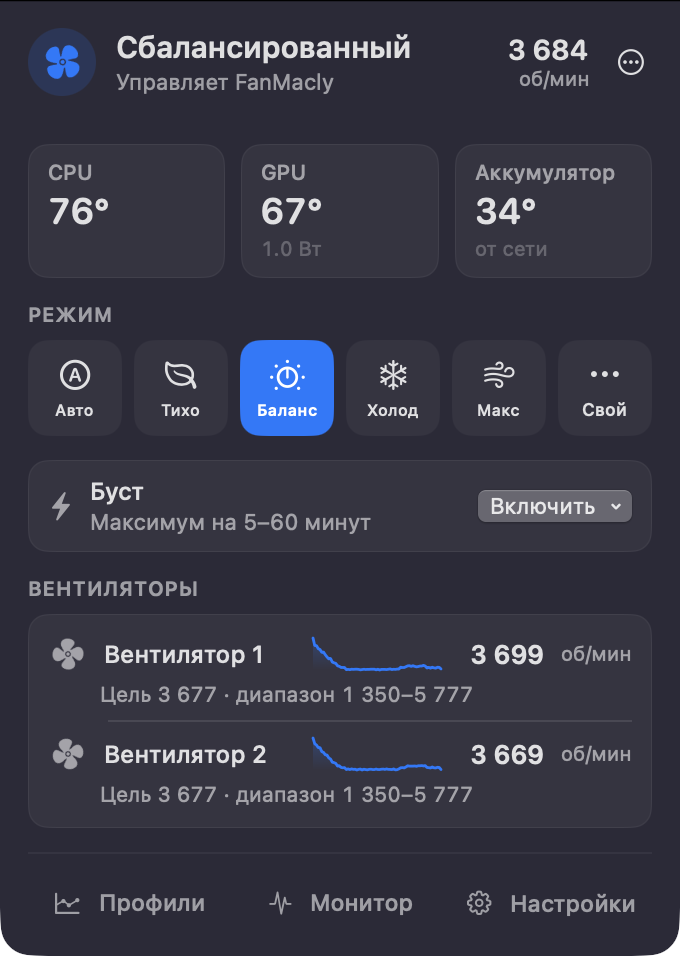
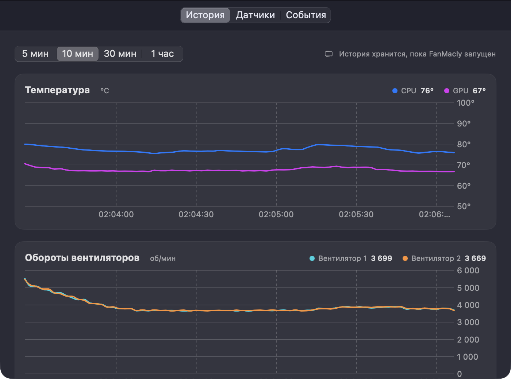
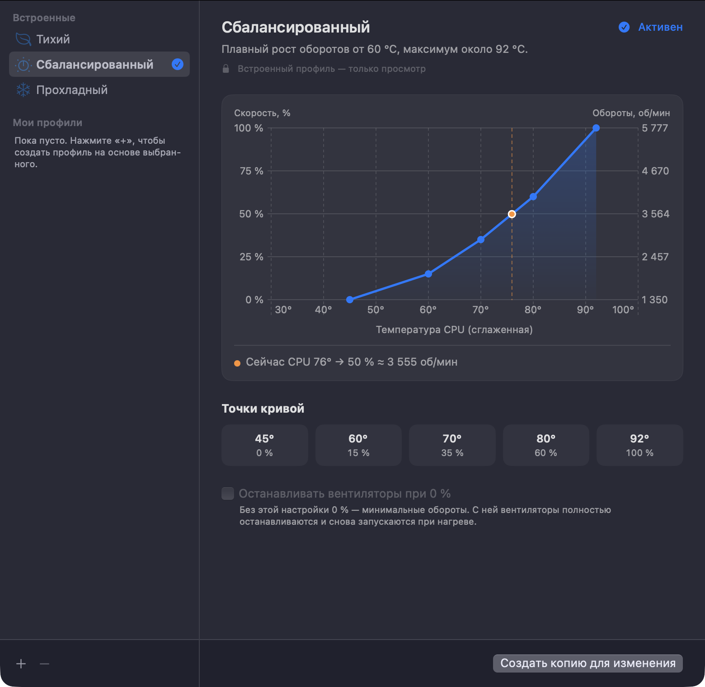
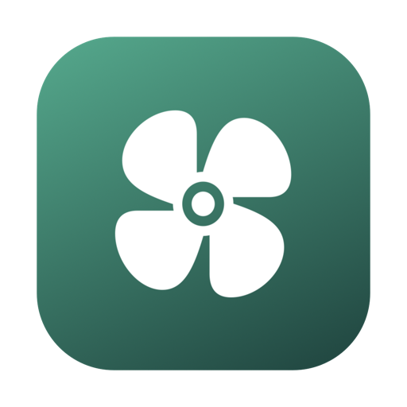

Auto
macOS is in charge, exactly as without FanMacly. You can still watch every sensor.
FanMacly lives in the menu bar and lets you choose how your Mac cools: quiet, balanced, cool or flat out. It keeps that choice through sleep, restarts and macOS taking the fans back.

The interface is in Russian for now.
One click
Three built-in curves cover most days. Make your own when they don't, or set the speed by hand.
macOS is in charge, exactly as without FanMacly. You can still watch every sensor.
Fans stay at minimum until 50 °C and ramp up gently. For calls, music and late nights.
Starts earlier and reaches full speed at 92 °C. A sensible everyday curve.
Keeps the chip cooler for long renders, builds and games. Never fully idle.
Every fan at its top speed until you choose otherwise.
Full speed for 5, 10, 30 or 60 minutes, then back to whatever you had before.
Save your own curves and switch between them from the panel, Shortcuts or a Focus.
Set an exact speed for each fan, linked or one by one.
Profiles
Drag the points to shape a profile. This is the same idea as the editor in the app, which also shows the RPM for your fans and where the curve is right now.
Monitor
An hour of history, a readable list of sensors and the helper's event log. When something changes, you can see why.

Temperatures, fan speeds and targets, plus CPU and GPU power from IOReport. Sensors are grouped and named in plain words instead of raw SMC keys.

Drag points on the chart, see the RPM next to each percent, and watch the marker for where the curve is right now.
Automation
Rules switch modes for you. Your Mac's own automation tools can switch them too.
Different modes for the charger, the battery and Low Power Mode.
Switch to Cool while Xcode, Final Cut or a game is open, and back when it quits.
“Set cooling mode” and “Start boost” actions for your own shortcuts.
Turn on Quiet whenever a Focus like Do Not Disturb starts.
Controls for Control Center, and a desktop widget with live status and buttons (macOS 27).
If control is paused, you hear about it, with a button to bring your mode back.
Safety
The numbers are FanMacly's own cooling preferences, tuned on an M4 Max. They aren't Apple's thermal limits. All of them live in one file, ControlPolicy.swift.
Any one of these switches the fans to maximum. Your mode comes back after 10 calm seconds.
FanMacly steps aside and keeps your mode. It resumes after a minute of stable readings, up to 3 times in 30 minutes.
Install
FanMacly is signed with a Developer ID and notarized by Apple, so it opens without warnings. Prefer to build it yourself? The source is all there.
Get the latest release and unzip it.
Drag FanMacly.app to /Applications and open it. A fan icon appears in the menu bar.
Click Install in the panel, then allow FanMacly in System Settings → General → Login Items & Extensions. The helper is what writes fan speeds.
Choose Quiet, Balanced or Cool. To give the fans back to macOS, pick Auto or quit the app.
# get the source $ git clone https://github.com/kdanet/FanMacly.git $ cd FanMacly # build and sign with your certificate $ SIGN_IDENTITY='Developer ID Application: Your Name (TEAMID)' \ bash scripts/build.sh # install $ cp -R build/FanMacly.app /Applications/ $ open /Applications/FanMacly.app
FAQ
FanMacly only changes fan speeds, and it always keeps the safety rules above. Any hot reading sends the fans to full speed, whatever profile you picked. Critical conditions hand the fans back to macOS. A write the SMC rejects is reported as an error, never treated as success. Apple's own thermal protection keeps working as well.
Only a privileged process can write fan settings to the SMC. FanMacly registers a small launchd helper with Apple's SMAppService. It accepts connections only from an app signed by the same team, keeps the mode you chose, and returns fans to macOS when you pick Auto, quit the app (you can turn that off) or remove the helper.
By default the fans go back to macOS. If you turn off “Return control on quit” in Settings, the helper keeps your mode running while the app is closed, including through sleep and restarts.
Two fan apps will fight over the same fans. FanMacly detects Macs Fan Control, TG Pro and smcFanControl and warns you. If they keep taking the fans, it pauses its own control so the fans don't flip back and forth.
No. FanMacly is built and tested for Apple Silicon only. It reads the fan modes, keys and sensors that Apple Silicon firmware uses.
No. FanMacly makes no network requests and has no accounts, analytics or third-party dependencies. Settings and profiles stay on your Mac.
Not yet: the interface is in Russian. The code and this page are open, and translations are welcome on GitHub.

FanMacly is free and open source under the MIT license.